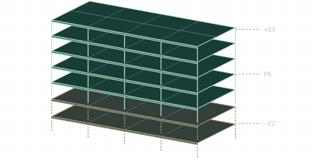

Cuaderno de obra
Adrio III
Cuatro plantas de viviendas, incluida la baja,
y dos niveles de garaje.

Calendario de obra
R · Realista (arriba) O · Optimista (abajo)
Cómo leer las previsiones
Las dos previsiones parten de duraciones y solapamientos diferentes. La línea de hoy indica el paso del tiempo. Solo los hitos confirmados acreditan trabajos terminados.